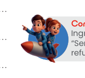

🎯 Propósito Pedagógico de la Fase
Contextualizar el aprendizaje, motivar al estudiante y activar sus presaberes antes de abordar los conceptos formales de matemáticas.

Comandante Leo
Guía de Misión
1. El Título de Misión
Convierte la clase de matemáticas en una misión espacial donde el estudiante es el protagonista (comandante).